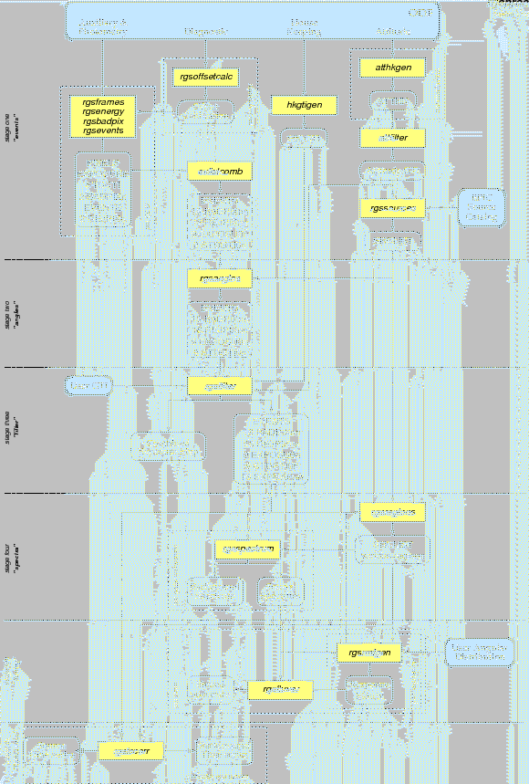

|  |
This task provides interactive control over the pipeline-style processing of RGS Spectroscopy and High Time Resolution (HTR) data, exposing the important options of the underlying tasks, while sparing the user the tedium and hazards of running each by hand. The user specifies the ODF directory as an environment variable or on the command line (see the OAL documentation). The resulting pipeline products and intermediate data files are created in the current working directory. By default all output files are named according to the convention of the Pipeline Processing Subsystem (PPS). Intermediate files that are discarded by the PPS--and so do not appear in the CD-ROM distribution--are distinguished by the use of lower case characters in the file name. rgsproc can redo later stages of processing without starting from scratch (parameters entrystage and finalstage) and without accessing the original ODF. The five processing stages, or entry points, are the organizing principle for the rest of this document:
rgsproc also allows the user to restrict the scope of processing to an enumerated subset of exposures within the observation (parameter withinstexpids), and an enumerated set of reflection orders (parameter orders). See Figure 1 for a block diagram of the data flow. The first stage of processing performs basic calibrations on the events in separate, CCD-specific intermediate event lists and then gathers them together in the combined event list. The second stage performs the source-specific aspect-drift correction and defines the channel grid for the events and exposure. The third stage performs the most basic filtering of the data--just to remove what is unusable--and generates exposure maps consistent with the filtering. The fourth stage produces spectra. The fifth stage generates response matrices and with them produces a combined, fluxed spectrum for the designated primary source and sixth stage generates source and background time series.
Note that fluxed spectra are inherently just a qualitative summary of the data, not to be used for quantitative analysis. Nevertheless the response matrices constructed in the fifth stage are large enough, by default, for meaningful use with spectral fitting packages such as XSPEC. At default size they take a very long time to compute, and are much larger than is necessary for the purpose of fluxing. Parameter rmfbins=250 produces very small matrices that are still quite adequate for fluxing, and much faster to compute, but such matrices should not be used for other purposes.
The combined event list takes from the intermediate event lists all of the events (combined into a single table), the collections of CCD-specific exposure tables and Good Time Interval (GTI) tables, and the collections of node-specific bad pixel tables and rejectable pixel tables. Name collisions among tables copied in from the intermediate event lists are avoided by placing the corresponding CCD number at the eighth character of the extension name. The following tables document the finished state of the combined event list. Next to the name of each table is the name of the task that created it, and for columns added later by a subsequent task the name of the responsible task is included among the comments. In addition to these and the nine STDGTI0n tables are eighteen node-specific exposure map image blocks, EXPMAPnn, created by rgsfilter.
In HTR mode the entire cross-dispersion dimension is collapsed into
one row, inextricably mixing source and background events together.
This mode is treated as a degenerate case of Spectroscopy in which
the event coordinates are assigned randomly over the whole vertical
extent of the chips. Likewise the exposure maps also cover the full
cross-dispersion extent of the chips, but with variation only in the
dispersion dimension. To annotate the minor structural differences
between Spectroscopy and HTR processing, throughout this document a
 marks items that do not apply to HTR mode data and a
marks items that do not apply to HTR mode data and a  marks items that apply only to HTR mode data.
marks items that apply only to HTR mode data.
| table: EVENTS -- evlistcomb
|
||
| BETA_CORR, XDSP_CORR | float32 | aspect-drift corrected RGS angles -- rgsangles |
| TIME | float64 | time stamp of associated frame |
| FLAG | int32 | status bits (boolean attributes) |
| BETA, XDSP | float32 | uncorrected RGS angles |
| CHIPX, CHIPY | int16 | chip-oriented pixel coordinates |
| PHA | int16 | total uncalibrated pulse-height |
| SHAPE | int8 | DPP shape code (may be null) |
| GRADE | int8 | number of pixels combined |
| BETA_CHANNEL, XDSP_CHANNEL | int16 | binned aspect-drift corrected RGS angles -- rgsangles |
| PI | int16 | calibrated pulse-height |
| CCDNR | int8 | CCD number |
| SC_POINTING_RA, | ||
| SC_POINTING_DEC, | ||
| SC_POINTING_POS | real32 | (optional) spacecraft pointing -- rgsangles |
| M_LAMBDA | real32 | (optional) nominal wavelength -- rgsangles |
| table: EXPOSU0n -- rgsframes
|
||
| FRAME | int32 | frame number |
| FLAG | int32 | status bits (boolean attributes) |
| TIMEDEL | real32 | integration time |
| TIME | real64 | timestamp |
| FRACEXP0, FRACEXP1 | real32 | node-specific exposure corrections for pixels rejected on-board |
| ASPCDSP, ASPCXDSP | real32 | aspect-drift correction parameters -- rgsangles |
| table: BADPIXnn -- rgsbadpix
|
||
| CHIPX, CHIPY | int16 | chip-oriented pixel coordinates of column bottom |
| YEXTENT | int16 | upward length of bad column |
| TYPE | int16 | bad pixel type code |
| BADFLAG | int16 | bad pixel source identifier |
| table: REJPIXnn -- rgsevents
|
||
| FRAME | int32 | frame number |
| FLAG | int32 | status bits (boolean attributes) |
| CHIPX, CHIPY | int16 | chip-oriented pixel coordinates |
The intermediate event lists contain some data of diagnostic value that is not carried into the combined event list. Except for this, there is no reason not to delete them, and accordingly they are deleted by default (parameter expunge). The diagnostic value of the intermediate files lies mostly in the PIXELS table, from which the events are reconstructed. In addition to that there are optional detector coordinate columns in the intermediate EVENTS table, which locate the event centroids to greater precision than is preserved in the combined event list. The finished state of these two tables is as follows.
| table: PIXELS -- rgsframes
|
||
| FRAME | int32 | frame number |
| TELX, TELY | int16 | telemetered pixel coordinates |
| ENERGY | int16 | telemetered pulse-height |
| CCDNODE | int8 | CCD node number |
| SHAPE | int8 | shape code (from telemetered SER) |
| GRADE | int8 | number of pixels (from telemetered SER) |
| RAWX, RAWY | int16 | node-oriented pixel coordinates |
| PI | real32 | calibrated pulse-height -- rgsenergy |
| EVENT | int32 | index to associated event -- rgsevents |
| RAWY | attrib | nominal y-coordinate for all events |
| table: EVENTS (intermediate)
-- rgsevents
|
||
| FRAME | int32 | frame number |
| CHIPX, CHIPY | int16 | chip-oriented pixel coordinates |
| BETA, XDSP | real32 | uncorrected RGS angles |
| PI | int32 | calibrated pulse-height |
| FLAG | int32 | status bits (boolean attributes) |
| SHAPE | int8 | DPP shape code (may be null) |
| GRADE | int8 | number of pixels combined |
| PHA | int32 | total uncalibrated pulse-height |
| TIME | real64 | timestamp of associated frame |
| DETX, DETY, DETZ | real32 | (optional) detector coordinates |
The remainder of this section summarizes the contribution from each sub-task. The reader should consult the referenced task descriptions for full details.